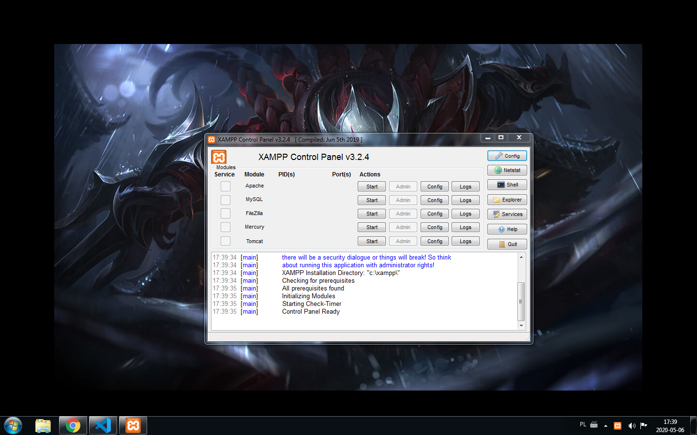

Mercury Mail Transport System (Mercury MTS) to darmowy serwer e-mail stworzonego przez Davida Harrisa,
który też stworzył Pegasus Mail. Najnowszą wersją jest 4.62.
Mercury posiada dwie wersje. Jedna jest przeznaczona dla Win32,
o aliasie Mercury/32 do uruchomienia w systemie Windows zaczynając od wersji 98, oraz dla Novell NetWare.
Twórca strony: © Andrzej Stefaniuk